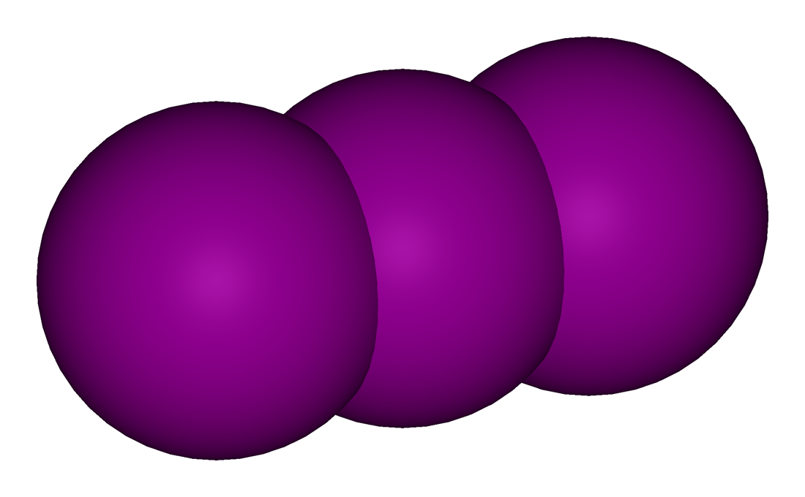
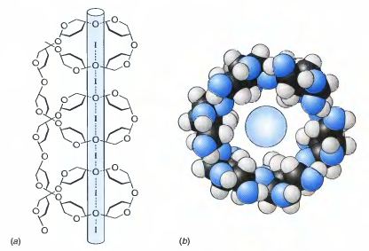

Transition metal compounds and complexes appear in a rich variety of colours. The juiciness of their colours and vibrant hues make the oil paint one of the most versatile tools for art. But why do some species containing d-block elements have any colour at all?
When ligands approach a bare metal ion, they interact with the d-subshell. As repulsion between the electrons in the ion and ligands increases, the d-orbitals are pushed to higher energy levels. The degree of the push depends on the number of electrons in the outer shell of the ion, the number of interacting ligands and the shape of the resultant complex.
The splitting energy $\Delta$ corresponds to the energy of light in the visible spectrum in most complexes. Electrons in the partially filled d-subshell can be promoted to higher eigenstates by absorbing the energy $\Delta$. Thus, the complementary colour is either reflected or transmitted to give a characteristic colour.
The table of the most common transition metals and their corresponding behavior on addition of hydroxide and ammonia ligands, adapted from the work by Dr Richard Kowenicki, is given below:
Metal
[M(H$_2$O)$_6$]$^{n+}$ (aq)
Adding OH$^-$(aq) / Excess
Adding NH$_3$(aq) / Excess
Fe$^{2+}$
Pale Green
Fe(H$_2$O)$_4$(OH)$_2$ (s) Dark green ppt darkens to red/brown Fe$^{3+}$ / N.C.
Fe(H$_2$O)$_4$(OH)$_2$ (s) Dark green ppt darkens to red/brown Fe$^{3+}$ / N.C.
Ni(H$_2$O)$_4$(OH)$_2$ (s) Pale green ppt / redissolves to pale blue soln [Ni(NH$_3$)$_4$(H$_2$O)$_2$]$^{2+}$
Cu$^{2+}$
Pale Blue
Cu(H$_2$O)$_4$(OH)$_2$ (s) Blue ppt / N.C.
Cu(H$_2$O)$_4$(OH)$_2$ (s) Blue ppt / redissolves to deep blue soln [Cu(NH$_3$)$_4$(H$_2$O)$_2$]$^{2+}$
Zn$^{2+}$
[Zn(H$_2$O)$_4$]$^{2+}$, Colourless
Zn(H$_2$O)$_2$(OH)$_2$ (s) white ppt/ redissolves to give [Zn(OH)$_4$]$^{2-}$
Zn(H$_2$O)$_2$(OH)$_2$ (s) white ppt / redissolves to [Zn(NH$_3$)$_4$]$^{2+}$
Cr$^{3+}$
Ruby/Purple/Green
Cr(H$_2$O)$_3$(OH)$_3$ (s) Green ppt / redissolves to give[Cr(OH)$_6$]$^{3-}$ dark green soln
Cr(H$_2$O)$_3$(OH)$_3$ (s) Green ppt / lilac soln [Cr(NH$_3$)$_6$]3+
Mn$^{2+}$
Pale Pink
Mn(H$_2$O)$_4$(OH)$_2$ (s) Sandy ppt which darkens in air / N.C.
Mn(H$_2$O)$_4$(OH)$_2$ (s) Sandy ppt which darkens in air / N. C.
The table can be visualised as follows:
A spiral denotes dissolution of the precipitate in the medium. A star denotes the absence of colour. The lower stripes in the third and fourth row correspond to excess hydroxide ions and ammonia.
Redox reactions are ubiquitous and important in the evolution of species and their environment, from animal respiration to weathering of rocks. The knowledge of how redox reactions work is indispensable for understanding the world around us.
Definitions
Redox stands for reduction and oxidation.
Reduction involves the gain of electrons and corresponds to the decrease in the oxidation number of an atom or ion. The electron density increases, and the proness of an atom or ion to the addition of another electron is reduced.
Oxidation involves the loss of electrons and is associated with the increase in the oxidation number. When an atom or ion is oxidised, its electon density decreases and it becomes more positive.
An oxidation number, also called an oxidation state is a number assigned to an atom or ion to describe its relative state of oxidation or reduction. The oxidation numbers are assigned according to a set of rules, most commonly given by the IUPAC, and represent an accounting tool for the chemical behaviour of the species.
Oxidation numbers and Stoichiometry
Oxidation and reduction reactions are linked by definition. When a compound is reduced, something must be oxidised, and vice versa. Using oxidation numbers it is possible to balance the equation by looking at how they change.
The procedure is the following for an unbalanced equation given:
Identify the elements which oxidation numbers change and note the extent of change.
Increase the quantity of the corresponding element so that the product of the moles of the compound with the change of the oxidation state is equal to the lowest common multiple of all changes in the oxidation state.
Balance for oxygen and hydrogen.
Check that the overall charges on both sides of the equation are equal.
Oxidising and Reducing Agents
Oxidising agents, also called oxidants, are chemical reagents which can oxidise other substances while themselves being reduced. They are potent electon acceptors, and either steal electons from other compounds or increase their oxidation numbers.
Some reagents can change colour in the oxidation reactions, and hence they can be used in the detection of oxidising agents. For instance, iodide ions are readily oxidised to iodine by suitable oxidation agents. Iodine is very slightly soluble in water, but nevertheless dissolves in a solution containing iodide ions to form the tri-iodide ion, I$^{-}_3$(aq):

A reagent presented as an iodine solution is usually solid iodine in KI(aq) which forms KI$_3$ (aq). The triiodide ion is yellow-brown which is responsible for the colour change when iodine is produced from iodide ions.
This test can be made more sensitive by the addition of starch, which forms a deep blue-black complex with iodine.

Source: Atul Singh Arora
Structure of the starch complex with iodine. The amylose chain forms a helix around the iodine units.
Reducing agents, also called reductants, are chemical reagents which can reduce other substances while themselves being oxidised. They easily give up their electrons or decrease the oxidation number of the reduced compound.
Some compounds change colour when they interact with reducing agents. One of the most common examples is discolouration of purple MnO$_4^{2-}$ to a very pink solution of Mn$^{2+}$ ions. Another one is the change of dichromate orange solution to the green solution of Cr$^{3+}$.
Redox Titrations
In redox titrations, oxidising and reducing agents react with each other. The common aim of titrations is to measure the exact quantity of the oxidising or reducing agent required to react completely with some other reagent.
Measuring reducing agents
Potassium manganate (VII) is usually used for titration of reducing agents due to its ease of handling and stability. In acidic solution it reacts according to the following half-equation:
With the potassium manganate (VII) in the burette, the purple permanganate ions turn to pale pink Mn$^{2+}$ which appear colourless in a dilute solution. The acidic conditions are critical, since the titre value would be too high and a brown precipitate of MnO$_2$ would form if insufficient acid is added. This is due to the proneness of permanganate ions to successive reduction in a neutral medium.
Measuring oxidizing agents
The common method involves the titration of the oxidising agent in excess potassium iodide with sodium thiosulphate.
The oxidising agent converts the iodide ions in the solution into iodine, which forms a yellow-brown solution. The amount of iodine produced is then determined by titration with sodium thiosulphate, $Na_{2} S_{2} O_{3}$, which reduces iodine back to colourless iodide solution while itself being converted into sodium tetrathionate, $Na_2S_4O_6$. Near the end point the solution is pale yellow, and starch is used to intensify the ultimate colour change from blue-black to colourless.
2,4-Dinitrophenylhydrazine is a molecule with a fascinating structure, shown below:
2,4-DNPH can be used to detect the carbonyl functional group of ketones and aldehydes. A positive test is indicated by the formation of a red or reddish yellow precipitate, provided the carbonyl reactant is aromatic or aliphatic respectively:
The reaction can be described as a condensation reaction, since two molecules combine into one with loss of water, as well as an addition-elimination reaction, because of the addition of the amine functional group to the carbonyl group and elimination of the water molecule. The mechanism is given below:
The product of the reaction, a hydrazone, can be crystallised and its unique melting and boiling points measured. Therefore, the identity of the substance reacting with 2,4-DNPH can be determined by this method, which is called derivatisation.
Both reagents can be used to differentiate between almost all aldehydes and ketones.
Fehling's reagent is a solution of copper (II) ions complexed with tartarate ions in presence of sodium hydroxide:
The tartarate tetraanions are bidentate ligands which give the complex the resultant charge of 6- and prevent precipitation of copper (II) hydroxide:
Benedict's reagent is similar to Fehling's, but contains citrate instead of tartarate anions, and sodium carbonate is used instead of sodium hydroxide. Citrate ligands prevent the formation of copper (II) carbonate. The charges of the two complexes are equal:
Testing procedure is the same for both reagents: a few drops of the compound are added to the reagent, and the mixture is warmed in the hot water bath. The positive test result for an aldehyde is the formation of a dark red precipitate of copper (I) oxide out of the deep blue solution. A ketone yields no change, unless it is an alpha-hydroxy ketone:
Moreover, aromatic aldehydes do not give a positive result due to the stabilising effect of resonance in the benzene ring. The results of the tests are shown in the images below:
Fehling's reagent reacts with an a) ketone and b) aldehyde
Once presence of the carbonyl functional group has been established with 2,4-DNPH, Tollen's reagent can be used to differentiate between most ketones and aldehydes.
The test works due to the fact that aldehydes are more easily oxidised than ketones. The diamminesilver (I) complex in the reagent acts as an oxidising agent, while ammonia dissolves any silver oxide which may form in the process.
In a positive test, the aldehyde is oxidised to a carboxylate ion, while the elemental silver precipitates out of the solution due to the reduction of the silver nitrate. The silver occasionaly adsorbs to the inner surface of the vessel, forming a layer of silver mirror.
However, alpha-hydroxy ketones can give a false positive due to the stabilising affect of the oxygen in the hydroxyl group bonded to the alpha-carbon on the structure of the final product.
Solid phoshorous (V) chloride reacts vigorously with alcohols at RTP, producing clouds of poisonous acidic hydrogen chloride gas. Thus, it can be used as a test for the -OH group.
However, phosphorous (V) chloride is such a good oxidising agent that it will oxidise any compound with the -OH group. To show that some compound is an alcohol, we need to make sure first that the sample is not contaminated with water, and secondly it is neutral. If the solution containing a carbonyl compound is acidic and reacts with $PCl_5$ in the cold to give acidic steamy fumes, the solution almost certainly contains a carboxylic acid participating in the following mechanism:
If the solution is pure and neutral and the reaction still takes place to produce steamy fumes, an alcohol is present. The reaction results in the aqueous mixture of phosphorous trichloride oxide and acyl chloride, which can be separated by fractional distillation.
Aldehydes and different types of alcohols can be identified using their proneness to oxidation. The usual oxidation agent used for these tests is a solution of sodium or potassium dichromate (VI) acidified with the dilute sulphuric acid. If the oxidation takes place, the protonated dichromate (VI) anions are reduced to a green solution of chromium (III) cations.
To test for different kinds of alcohols, make sure that the tested solution is neutral, does not contain water, and reacts with phosphorous (V) chloride to produce acidic steamy fumes of hydrogen chloride. Then add a few drops of the alcohol under consideration to a test tube containing protonated dichromate ions and warm the mixture in the hot water bath.
Primary and secondary alcohols turn green, while there is no colour change for tertiary alcohols.
The result is similar for aldehydes, which are oxidised to the corresponding carboxylic acids.
Carbonates and hydrogencarbonates can be used to test for carboxylic acids. The procedure is easy to conduct safely and the resultant fizziness is easy to detect visually.
Reaction between a carboxylic acid and a carbonate or hydrogen carbonate is an acid-base reaction. A salt forms together with water and carbon dioxide, which explains the fizziness of the resultant solution. The difference in vigour between the carbonate or hydrogencarbonate reaction with a carboxylic and their reaction with hydrochloric acid is small.
Nevertheless, the vigour of the reaction does depend on the carbonate: its size, shape, phase and polarisation affect the rate.
Discolouration of bromine water indicates that the tested compound contains unsaturated hydrocarbon, enol or phenol.
There is an advantage in using water as a solvent in this reaction: increased polarity enhances the stability of the intermediate in the reaction and hence speed it up. Additional catalysts are not required.
The hydroxyl group in phenols activates the benzene ring toward the reaction with the electrophilic bromine. One of the lone pairs of the oxygen atom in -OH overlaps with the delocalised electrons in the ring, hence increasing the electron density and proneness to the electrophilic attack. The -OH group activates the ring in a special manner: incoming groups tend to assume the 2, 6 (next to the carbon with -OH) and 4 (opposite the carbon with -OH) position. This is because of the resonance structures formed due to the alcohol functional group, shown below:
In the reaction of bromine with phenol, white precipitate forms. Enols are different, and react with bromine via electrophilic substitution route. Both mechanisms are given below:
Unique colours of silver salts can be used to identify halides.
Sodium/potassium hydroxyde deprotonates the tested compound which then dissociates to give off the halide into the solution, while nitric acid prevents the formation of other non-halide precipitates. Silver nitrate is then added to give the following colours with chlorine, bromine, and iodine respectively:
There is no coloured precipitate for the fluoride salts.
The identity of the precipitate can be confirmed by adding concentrated sulfuric acid or ammonia solution.
If a small piece of sodium is dropped into the beaker of alcohol, it will dissolve steadily to give off bubbles of hydrogen gas and leave a colourless solution of the corresponding alkoxide, which is structurally similar to the alcohol, but with sodium instead of hydrogen bonded to the oxygen. The white alkoxide can then be retreived by careful evaporation. Sodium metal is highly reducing, and forms caustic soda in the reaction with water. Therefore, to avoid false positives we have to make sure that there are no traces of water.
Sodium reacts violently with acids to produce a salt and hydrogen, hence the pH also should be checked. But carboxylic acids and their derivatives are not the only compounds encountered in high school organic chemistry acidic enough to react with sodium; phenol also works. Delocalisation of the negative charge around the benzene ring stabilises the phenoxide ion. However, since phenol is only a weak acid, the reaction is very slow.
To sum up, if there is some fizzing in the neutral solution on addition of metallic sodium, the tested compound is likely to be an alcohol. If the organic solution is acidic, it is likely to be a carboxylic acid or a phenol.
When a carboxylic acid is heated with an alcohol in presence of an acid catalyst, a corresponding ester forms. Esters are easily recognised by their characteristic smell.
The esterification reactions are both slow and reversible. The general equation is given below:
Decanting a solution at equilibrium into water helps to intensify the ester smell. Apart from the very small ones, esters are mostly insoluble in water and hence form a thin layer on the surface, while excess acid and water readily diffuse through water.
Colourful diazonium compounds can be produced from aromatic amines in the reaction with nitric (III) acid, which is produced by dissolving sodium nitrite in dilute hydrochloric acid, and phenol. Let's look at phenylamine.
First, the solution of phenylammonium chloride is cooled in the beaker of ice. The solution of the nitrite is then added slowly, so that the temperature never goes over 5°C. The obtained solution contains the following ion:
for methyl ketones, ethanal, methyl secondary alcohol and ethanol
Iodine can be used to identify methyl ketone or ethanal, given that the tested solution is a ketone, or, if it is known that the tested compound is an alcohol, to test for methyl alcohol or ethanol. A positive result for all of them is a characteristic antiseptic smell and formation of a very pale yellow precipitate of triiodomethane, also known as iodoform.
The reaction with suitable alcohols proceeds in three stages. First, the alcohol is oxidised to aldehyde or a methyl ketone, while the iodine reacts with the sodium hydroxide to produce sodium iodate, a potent oxidising agent. Then the aldehyde or ketone formed reacts with iodine, and the product reacts with hydroxide ions. Thus, the overall reaction for the second stage is the following:
Have you ever wondered what a calendar is? How would you explain the notion of a calendar to an alien, albeit a very precocious one with some notion of homo sapiens common sense?
The word calendar originates from Latin calendae , or "calends". The calends was the first day of the month in the ancient Roman calendar, when the debts fell due and accounts were reckoned in accordance with the account book called kalendaria.
A calendar is a systematic register of time. At the core of the solar calendar lies a notion of a day, or the period of the Earth complete rotation about its axis, and a year, or the period of the Earth moving in its orbit around the sun.
In the common calendar, each day is assigned a unique date which corresponds to a particular day, month and year. One-to-one correspondence is established between a date and a certain period of time, serving a function of a complete and consistent register of human experience. There are several calendric systems fulfilling one purpose or another:
fiscal calendars are used for budgeting, keeping accounts and taxation
religious calendars (e.g. Hebrew, Islamic) are used to determine dates of religious significance
civil calendars (e.g. Gregorian, Julian) are used for general purposes, such as synchronisation of logistics and business administration.
The calendar commonly adopted for general purposes is the Gregorian calendar.
Gregorian Calendar
Fractional Approximation
To understand the underlying structure of any calendric system we need some vocabulary. All solar calendars are based on the time period in which the Earth completes a full seasonal circuit called the tropical year. As of the year 2000, the mean tropical year is 365.242189 [1]. Although the duration of the tropical year changes, assume that it is known precisely. Note the fractional part 0.242189.
Let's say we want our year to last 365 days. Every time we the year finishes, the error term is introduced. If the error was not adjusted in the long term, some time later the ignorant astronomer from New York or Kostroma would be freezing in July snow and drip sweat in the flourishing park in January! But how can the fractional part be approximated in such a way that the discrepancy with the accurate value is minimal? The problem of the calendar construction in other words can be simplified as follows:
Find an approximation of a real number in the form of a fraction with the denominator q.
If the real number line is constructed and all the rational numbers with the denominator q are marked on it, the number $ \alpha $ is either equal to one of the fractions or lies between two of them. The case of $ \alpha $ coinciding with one of the fractions is trivial.However, if $ \alpha $ is not equal to either of them, it satisfies the following pair of inequalities for some integer p:
$\frac{p-1}{q} < \alpha <\frac{p}{q}$
One of the two fractions $ \frac{p-1}{q}$ and $ \frac{p}{q} $, which is closer on the number line to $ \alpha $, constitutes the best rational approximation with the required denominator $ q $. For instance, let's consider the approximation of represented in Figure 1.
Figure 1
$ \alpha $ is closer to $ \frac{p}{q} $, and hence $ \alpha\approx\frac{p}{q} $. If $ \alpha $ lies exactly between $ \frac{p-1}{q} $ and $ \frac{p}{q} $, $ \alpha $ is said to be best approximated by $ \frac{p}{q} $ to eliminate indeterminate cases. When $ \alpha $ is approximated, a corresponding approximation error $ \Delta $ emerges:
$ \Delta=\alpha-\frac{p}{q} $
If the approximation $ \frac{p}{q} $ underestimates $ \alpha $, $ \Delta < 0$ , if it overestimates, $ \Delta > 0$ .
The absolute value of the approximation error, $ |\Delta|$, is called an absolute error.
From Figure 1 it is evident that the absolute error never exceeds half the length between the approximating fractions. Thus,
$ |\Delta| \leq \frac{1}{2q}$
The value $ \frac{1}{2q}$ is the upper bound of the absolute error. The upper bound of the absolute error is achieved when $ \alpha$ lies exactly between the approximating fractions.
The approximation is optimal, if for the relatively small denominator $ q$ the approximation is as close to the true value as possible. This condition can be characterised by comparing the absolute error and its upper bound:
The defining part of the above equation is $ |q\alpha-p|$. Let's call this value the reduced error $ h$. Since the ratio of the absolute error to the upper bound of the absolute error lies between zero (in which case the approximation approaches the true value) and one,
$ 0<h \leq \frac{1}{2} $
The smaller $ h$, the more preferable the approximation is. Let $ \lambda$ be the coefficient of optimality defined as
$ \lambda=\frac{1}{2h}=\frac{1}{2|q\alpha-p|}$
The coefficient of optimality can be intuitively understood as the factor by which the absolute error is less than the upper bound of the absolute error. Thus, the greater $ \lambda$, the more preferable the approximation is. From (6) it follows that $ 1\leq\lambda<\infty$ and $ \lambda h=\frac{1}{2} $.
How can we apply the idea of fractional approximation to the development of a solar calendric system? We will find out soon. Let's acquiant ourselves with a wonderful tool in our mathematical apparatus.
Let's forget about the decimal number system. A mathematician Nikolai Nikolaevich Luzin said: "The advantages of the decimal number system are not mathematical but zoological. If humans had eight fingers instead of ten, the humankind would use the octal number system." The decimal number system is useful in everyday life, but its use becomes superfluous if theoretical questions of arithmetic are investigated.
Thus, we give up on using any specific base and focus on the following question: what is the most intuitive way of approximating a non-integer number?
The answer seems to be straightforward: determine an integral interval (interval between two integers) which contains the approximated number. The number hence can be represented by identifying the lower bound of the interval:
$ \alpha_0 $ is our first approximation. Since $ r$ is less than 1, it can be represented in the form $ r=\frac{1}{x_1}$, where $ x_1$ is greater than 1. Hence, (9) can be written in the following form:
The expression
$$ \alpha_0+\frac{1}{\alpha_1+\frac{1}{\alpha_2+\frac{1}{\cdots+\frac{1}{\alpha_{n-2}+\frac{1}{{\alpha_{n-1} +\frac{1}{\alpha_n}}}}}}}$$
is called a continued fraction. $ \alpha_0, \alpha_1, \cdots, \alpha_n$ are called the elements of the continued fraction. We restrict the current definition to $ \alpha_0, \alpha_1, \cdots, \alpha_n \in \mathbb{N}$. Note the gawky notation which can be tedious to write on a piece of paper if there are more than, for instance, 5 elements. Let's introduce the short-hand notation so that our continued fraction can be written in the following form: $ [\alpha_0;\alpha_1,\alpha_2,\cdots,\alpha_n]$.
The following theorems can be proven:
Any positive rational number can be represented as a unique continued fraction with a finite number of elements and the last element equal to one.
Two continued fractions are equal if and only if their corresponding elements are equal.
Irrational numbers cannot be represented as a finite continued fraction. However, there is a representation of each irrational number as a string of natural numbers in the form given above.
Each continued fraction can be broken down into a fit fraction by writing down its first n elements and discarding all the others. The smaller n, the simpler the fit fraction is, i.e. it has a smaller denominator. The magnificent property of fit fractions is that any other approximation of any number by any fraction with the smaller denominator is worse than the approximation by a corresponding fit fraction.
The proofs are omitted in the present discussion; rigorous development and further comprehensive study of continued fractions can be found in the book by A.Ya. Khinchin.
Application to the Tropical Year
Let's return to our original problem. We need to approximate as closely as possible the mean length of the tropical year, $ y=365.242189$.
Wouldn't it be convenient for the length of the year to be such a nice integer 365? Nothing stops us to make our own conventions! Yet here is the downsize: our value would lose its physical meaning. Each 'year' the Earth would be found in a different point of its orbit! In four years the discrepancy would constitute almost a whole day. This inconvenience destroys all our hope for the practical method of time accounting, doesn't it?
It does not. Let's devise the solution, remembering about the KISS principle.
$ y$ can be represented as the following continued fraction (verify!):
Changes in the optimality of all the other approximations are insignificant up to a second. Each new fit fraction gives a better approximation of the tropical year. In fact, the approximation number 1 is a backbone of the Julian calendar. With the help of Sosigenes of Alexandria, Julius Caesar ordered the adoption of a calendar with an added day once in four years in the Roman Empire. Omar Khayyam, a prolific mathematician, astronomer, philosopher and poet, suggested the adoption of the more accurate calendar with 8 leap years per 33-year cycle.
Discrepancy of 130 milliseconds in the 4th approximation has no practical importance in casual use. It is much more accurate than the Gregorian year, which is precisely 365 days 5 hours 49 minutes and 12 seconds, lagging behind the tropical year by about 27 seconds. Yet the adoption of such a calendar is problematic: the occurence of leap years is not round, and transcendence of the cultural and administrative barriers requires a great leap from the humankind.
BIBLIOGRAPHY
Meeus, J. and Savoie, D, The history of the tropical year. Journal of the British Astronomical Association, 102(1), 40-42.
Khinchin, A.Ya. Continued Fractions. The University Chicago Press, 1964
Beskin, N.M. Continued Fractions. KVANT magazine #1, 1970
global sound settings compatible with all the applications installed
Solution:
Kernel-driven sound card drivers are provided by the ALSA framework, which has replaced the OSS. To learn more, consult the guide on Arch Linux wiki I have found particularly helpful.
First, install the alsa-utils package. By default, all the sound channels are initially muted. Manually unmute the channels by typing alsamixer command, choosing the required channels and pressing m.
Secondly, check the ID of your sound card by typing the shell command aplay -l. The ID of my sound card was HDMI. Set the default sound card by creating the file at /etc/modprobe.d/alsa-base.conf :
Thirdly, install alsa-oss to insure compatibility of the OSS applications with dmix. Then load the kernel modules by executing sudo modprobe snd-seq-oss snd-pcm-oss snd-mixer-oss .
Next, install the alsaequal package which provides the system equaliser. Edit the global ALSA configuration file located at /etc/asound.conf, replacing HDMI with your ID:
pcm.!default {
type plug
slave.pcm {
@func getenv
vars [ ALSAPCM ]
default "hw:HDMI"
}
}
ctl.equal {
type equal;
}
pcm.plugequal {
type equal;
# Modify the line below if you do not
# want to use sound card 0.
#slave.pcm "plughw:0,0";
# by default we want to play from more sources at time:
slave.pcm "plug:dmix";
}
# pcm.equal {
# If you do not want the equalizer to be your
# default soundcard comment the following
# line and uncomment the above line. (You can
# choose it as the output device by addressing
# it with specific apps,eg mpg123 -a equal 06.Back_In_Black.mp3)
pcm.!default {
type plug;
slave.pcm plugequal;
}
pcm.dsp {
type plug
slave.pcm "dmix"
}
Finally, reboot and ensure the setup works by executing speaker-test.
If everything is alright, congratulations! Otherwise, do not suffer alone; there are people happy to help!